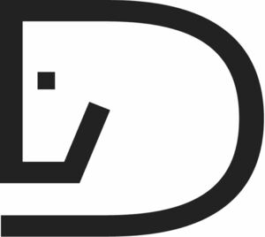

Trade Mark Journal No.2025/024 13 June 2025
WO0000001856961 (3,18)
Office of origin: Germany
Date of International Registration:17 February 2025
Date of designation in the UK:
17 February 2025

International priority date claimed: 9 January 2025
(Germany)
- Class 3
- Non-medicated cosmetics; non-medicated toiletry preparations; products for the body and beauty care products for animals; cosmetics for animals; breath fresheners for animals; shampoos for animals [non medicated grooming preparations]; skin care products for animals; conditioning sprays for animals; preparations and products for fur care; deodorants for human beings or for animals; dental care preparations for animals; bath preparations for animals; cleaning preparations for animal cages; leather care preparations, in particular leather soaps, leather waxes, leather polishes and leather balms; non-medicated dentifrices; perfumery; ethereal oils; laundry preparations; bleaching preparations; cleaning agents; buffing compounds; grease-removing preparations; chewable tooth cleaning preparations; leather and shoe cleaning and polishing preparations; preservative creams for leather; cleaning preparations for leather; leather preservatives [polishes]; tissues impregnated with leather gloss agents; leather bleaching preparations.
- Class 18
- Gaiters for animal legs; equine leg wraps; knee-pads for horses; non-medical taping underlays; leather and imitations of leather; fur; animal skins; goods of leather, imitations of leather, furs and animal skins, namely fur saddle, lambskin pads, lambskin saddle seats, lambskin saddle pads, pads of woven fur for riding saddles, leather straps for whips, casual bags, travel bags, shopping bags, shoulder bags, handbags, briefcases, sports bags, beach bags, school bags, shoulder straps, cosmetic bags, hip sacks, garment bags, rucksacks, pouches, chest pouches, toiletry bags, travelling sets, shoe bags, gym bags; small leather goods, namely card cases, identification card cases, purses, key cases; rubber rings as parts of saddle blankets; jumping hoof bells; rings of rubber for stirrups; hoof rings made of rubber; rubber bits for animals [harness]; rubber spur protectors; saddle pads of synthetic rubber; whips; harnesses; saddlery, in particular straps for harnesses, stirrups or for saddles, lunging girths and lines, vaulting surcingles, snaffles, bridles; collars for animals; leads for animals; covers for animals; horse blankets; saddlecloths for horses; fly masks for animals; horse fly sheets; fly ears / hoods for horses; horse collars; tail wraps for horses; training leads for horses; horse saddles; covers for horse saddles; iron fittings for horse harnesses; cribbing straps for horses; articles of clothing for horses; face masks for horses; saddlery and bridles, harnesses for animals; halters for horses; lead ropes for horses; luggage, bags, wallets and carrying bags; travel luggage; tote bags; holdalls; umbrellas; bags for umbrellas; parasols; walking sticks; horseshoes; stud hole plugs for horseshoes; hoof guards; animal clothing; dog clothing; dog leashes; dog collars; rawhide chews for dogs; parts and accessories for all the aforesaid goods, included in this class.
Equestrian GmbH
Representative: Eversheds Sutherland (Germany) Rechtsanwälte Steuerberater Solicitors Partnerschaft mbB, Brienner Str. 12, 80333 München, GERMANY